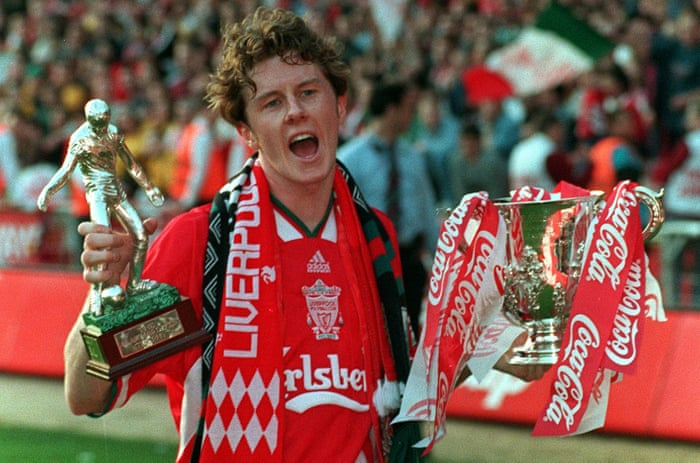

These are the 25 most famous Liverpool players that have played for the great club and won trophies along the way;
| 25. Steve McManaman |  |
|---|---|
| 24. Luis Garcia | |
| 23. Ian St. John | |
| 22. Steve Heighway | |
| 21. Phil Neal | |
| 20. Peter Beardsley | |
| 19. Ian Callaghan | |
| 18. Alan Hansen | |
| 17. David Fairclough | |
| 16. Bruce Grobbelaar | |
| 15. Emlyn Hughes | |
| 14. Jan Molby | |
| 13. Michael Owen | |
| 12. Roger Hunt | |
| 11. Ray Clemence | |
| 10. Graeme Souness | |
| 9. Kevin Keegan | |
| 8. Billy Liddell | |
| 7. Jamie Carragher | |
| 6. Tommy Smith | |
| 5. Robbie Fowler | |
| 4. Ian Rush | |
| 3. John Barnes | |
| 2. Steven Gerrard | |
| 1. Kenny Dalglish | |